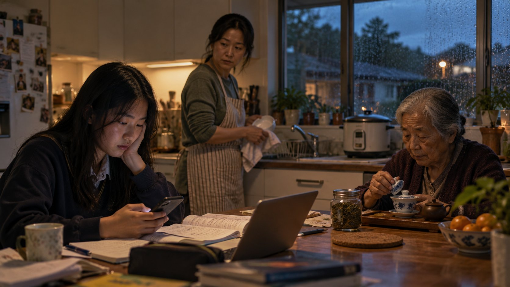

An RSS simulation examining how banking, insurance, and verification systems interact with four culturally distinct New Zealand households — a Samoan-NZ extended family, a Pākehā three-generation household, a Chinese-NZ migrant family, and a rural Māori whānau — navigating open banking, insurance withdrawal, algorithmic risk scoring, and climate-linked displacement pressures. The expected finding was that Māori and Pacific households would be misread. What was less expected was that every household was misread — just differently. There is no unmarked baseline that the algorithm sees clearly.
